Going over simple HTML structure using headers, paragraphs, links, and pictures
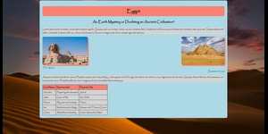
Styling different aspects of HTML page using id's, colors, fonts
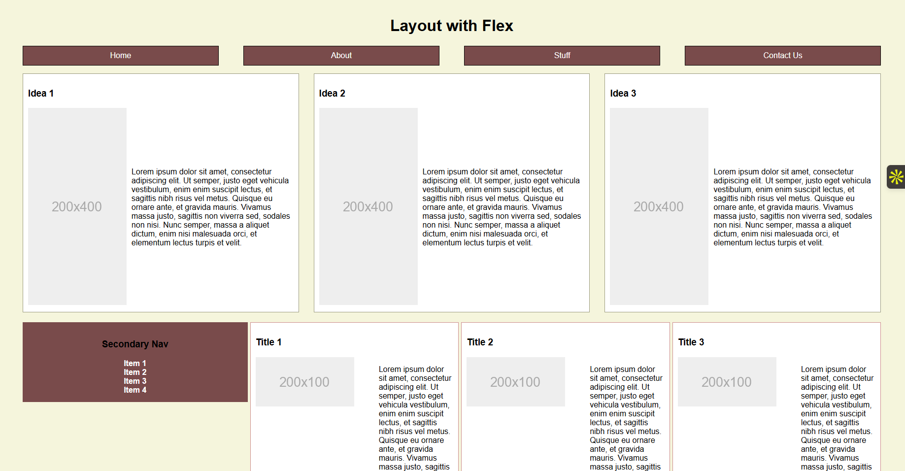
Using flex to lay aside, articles, and gallery out.
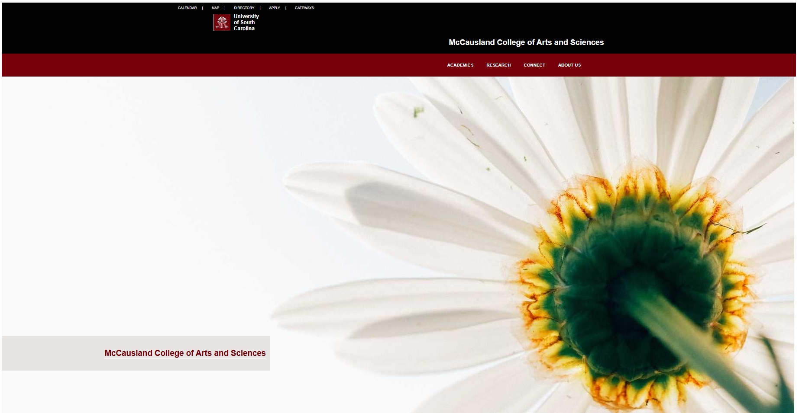
Using flex, position, and display to recreate a USC Website
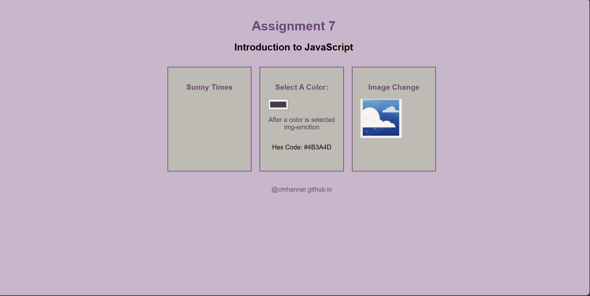
Using JavaScript to design buttons and functions.
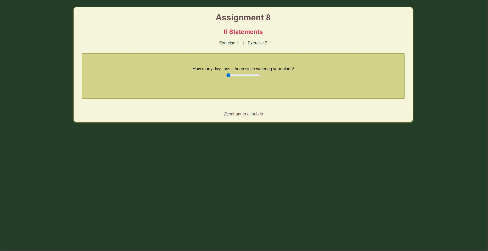
Using JavaScript to display information in form based on clicked condition, and toggling menu in mobile.
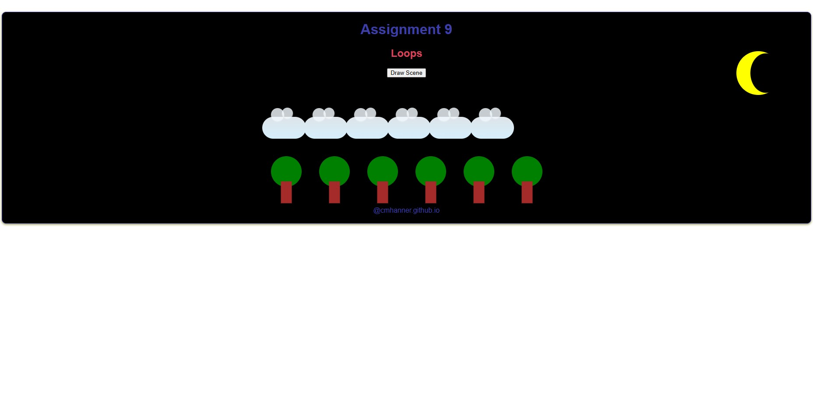
Using JavaScript to loop and display 6 trees, 6 clouds, on button press and to check time to change color from day to night.
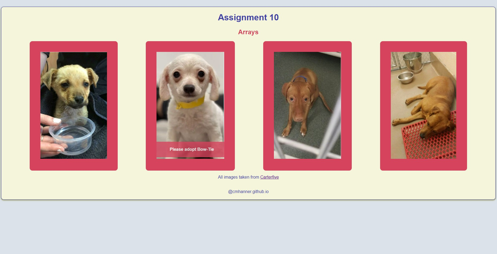
Using JavaScript to loop through a Array and display the pictures before adoption as page loads, to provide a hover effect and looping through another Array to show pictures after adoption.
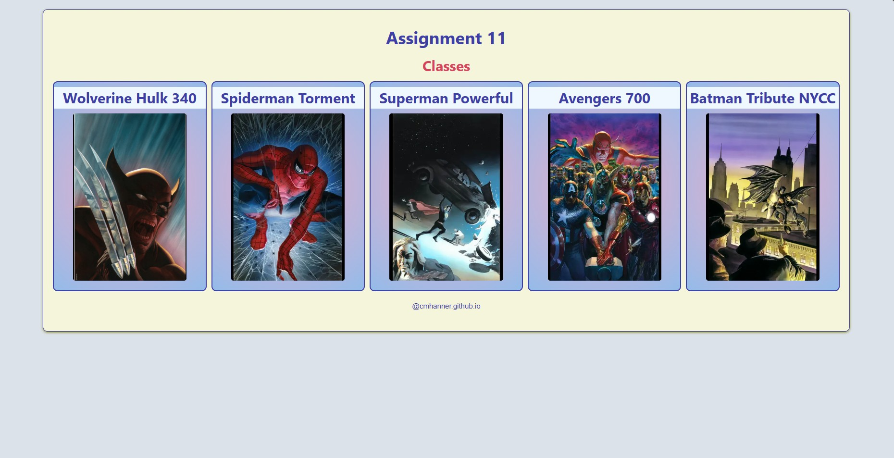
Using JavaScript classes to display information with modal popups
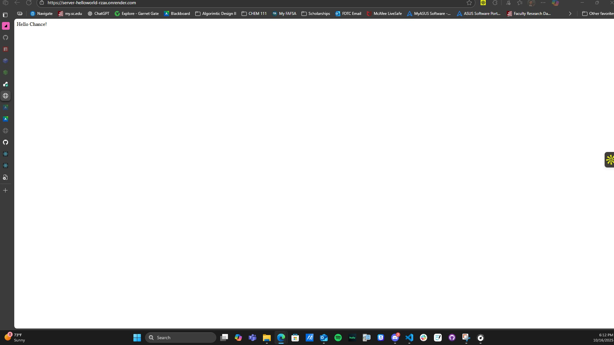
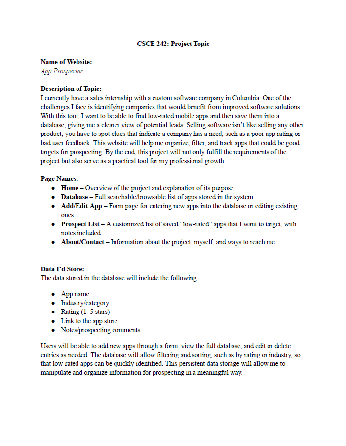
Choosing a Project Topic, that must have a database and manipulative data.
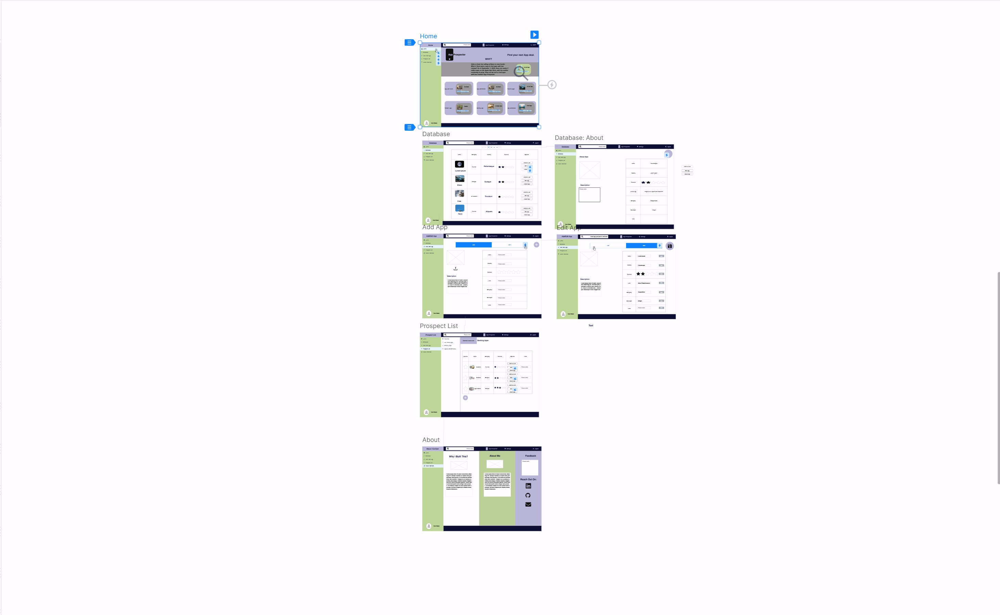
Wire framing project using MockITT, having interactive clicks to show connection. Following proffesional guidelines.
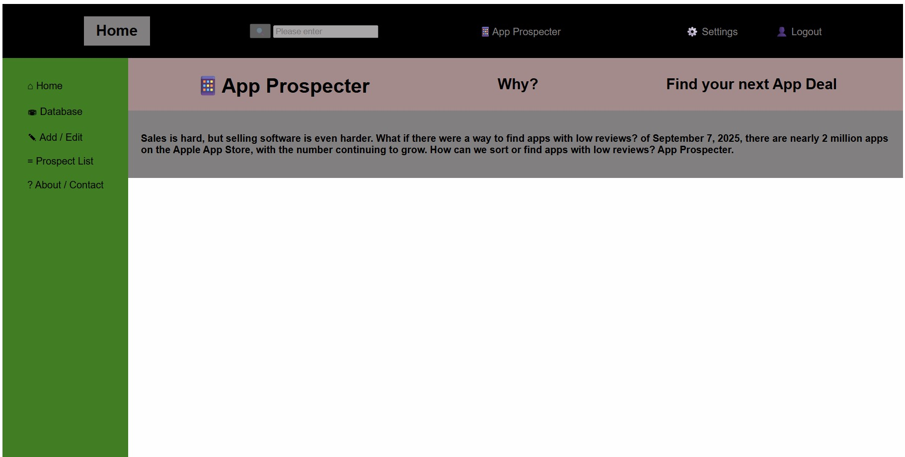
Designing Project Pages in HTML & CSS.
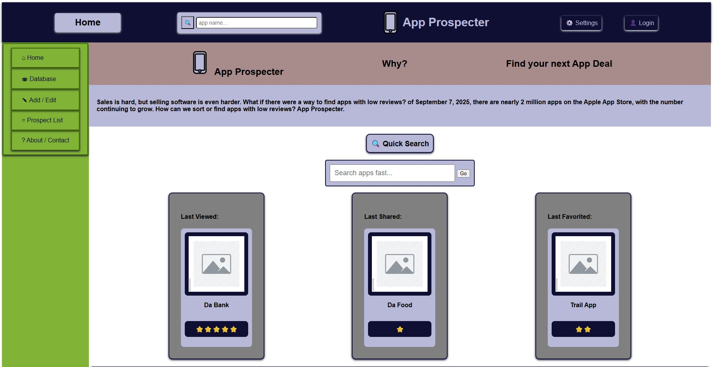
Added images, updated text, color scheme, and hamburger menu.
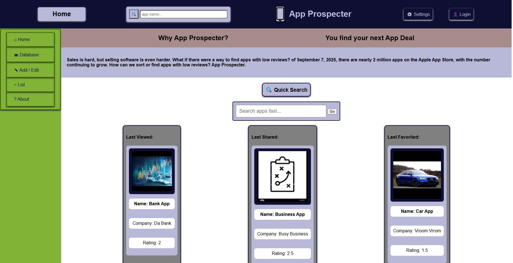
In Part 5, I applied the updates to Part 4. This part is parsing JSON files to display info on the website.
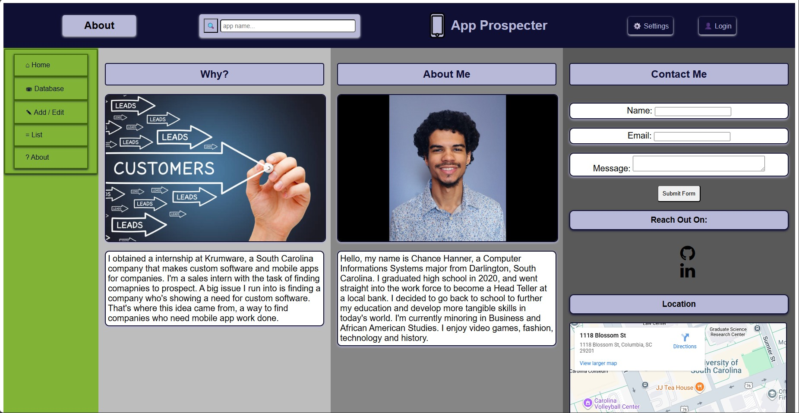
Added a form page for users to send me feedback, a map showing my "location", and gave my socials link locations.
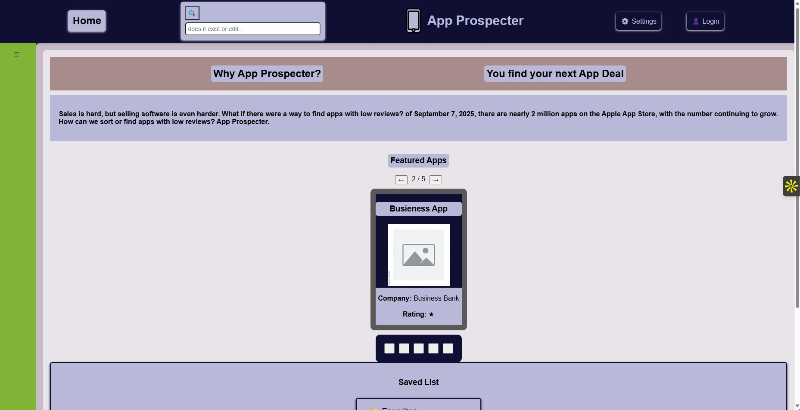